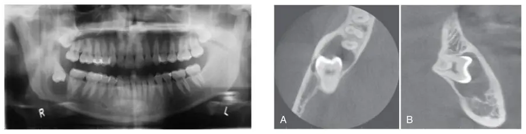
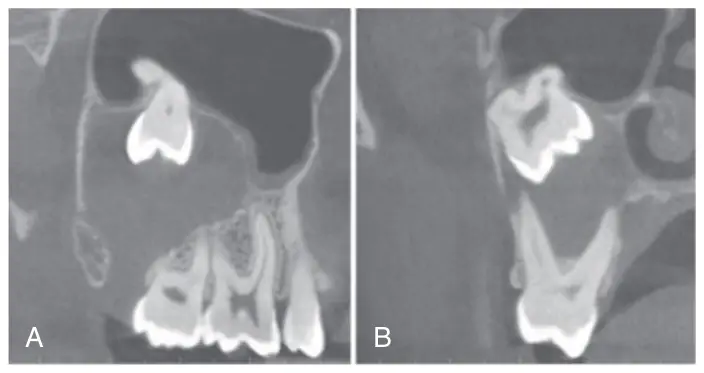

نسخه استخراجشده؛ ترجمه یا تأیید علمی انجام نشده است. وضعیت: captured
دومین کیست شایع فک، از اپیتلیوم مینایی کاهشیافته میآید — پوششی که بعد از کامل شدن مینا روی تاج باقی میماند. مایع بین این پوشش و تاج جمع میشود و کیست شکل میگیرد.

و همتای بافتنرم آن، کیست رویشی (eruption cyst) است — همان فرایند وقتی دندان از استخوان بیرون آمده و زیر مخاط است.
حالا مهمترین نکتهی تشخیصی کل درس: اپیسنتر کیست دنتیجروس کرونال به تاج است و پوشش آن در محل اتصال مینا و سمنتوم (CEJ) به دندان میچسبد. اگر اتصال در جای دیگری بود، تشخیص را زیر سؤال ببر.
محل شایع: بیشتر با مولر سوم و کانین ماگزیلا. حاشیه: واضح و کورتیکه. ساختار داخلی: کاملاً رادیولوسنت — بهجز خود تاج که درون آن شناور به نظر میرسد.
و توان جابهجاییاش را دستکم نگیر: دندان را میتواند به سمت آپیکال و دیستال براند — تا داخل راموس، کندیل یا کرونوئید در مندیبل، و در ماگزیلا تا کف حفرهی بینی. در کیستهای بزرگ، دندانهای مجاور هم جابهجا و ریشههایشان تحلیل میرود.
و یک نکتهی ظریف دربارهی شکل: اگر کیست کورتکس را پرفوره کند، فشار داخلی آزاد میشود و کانتور هیدرولیک صاف میشود. یعنی نبودِ شکل بادکنکی، کیست را رد نمیکند.
دشوارترین افتراق این درس، تفکیک کیست دنتیجروس از یک فولیکول بزرگ ولی طبیعی است. اندازه بهتنهایی جواب نمیدهد.

سه نشانهای که ترازو را به سمت کیست میبرد:
و اگر هیچکدام قطعی نبود؟ راهحل سادهای هست: ۴ تا ۶ ماه بعد دوباره تصویربرداری کن. زمان، تفاوت رشد را آشکار میکند. جراحی فوری برای یک فولیکول بزرگ، درمان بیش از حد است.
و افتراق دوم — کراتوسیست ادنتوژنیک در موقعیت پریکورونال: کراتوسیست اتساع باکولینگوال کمتری میسازد، کمتر ریشه را تحلیل میبرد، و اتصالش به دندان ممکن است آپیکالتر یا کرونالتر از CEJ باشد. و اگر تکامل ریشه ناقص باشد، احتمال کراتوسیست بالاتر است.
و درمان: برداشت جراحی، که معمولاً خود دندان را هم شامل میشود. کیستهای بزرگ ابتدا با مارسوپیالیزاسیون کوچک میشوند.
و چرا پوشش کیست باید به پاتولوژی برود؟ چون از پوشش کیست دنتیجروس — هرچند بهندرت — آملوبلاستوما، کارسینوم سلول سنگفرشی و کارسینوم موکواپیدرموئید گزارش شده است.